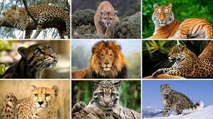

Tengo algo que decirte sobre La Perdida de biodiversidad, enfocando a los Felinos en peligro de extinción

Amo a los gatos y al cuidar de ellos, pensé en los gatos mayores, los felinos que viven en las selvas, montañas y los bósques. Me di cuenta de que lamentablemente algunos estan en peligro de extinción.
¿Sabías que muchos felinos, como el Jaguar, Ocelote, Tigrillo, entre otros están en peligro de extinción? Una de las razones es cómo usamos la energía. Cuando se destruyen bosques para sacar petróleo o construir empresas, los animales pierden su hogar. Además, el cambio climático causado por usar demasiada energía contaminante también afecta su comida y su entorno.
Investigué cómo es que eso ha sucedído. La caza, la tala de árboles, contaminación entre otras razones estan acabando con los hábitats y las espécies.

Este es un Ocelote (Leopardus pardalis).

Este es un Jaguar (Panthera onca).

Este es un Tigrillo (Leopardus tigrinus).

Este es un Yaguarundí (Herpailurus yagouaroundi).

Debemos hacer algo para cuidar la biodiversidad. Creé esta página para promover y apoyár estas causas. ¿Quieres sumarte? Busco ideas y voluntarios para ser parte de Felinos En Acción
😺
CatGPT 😸